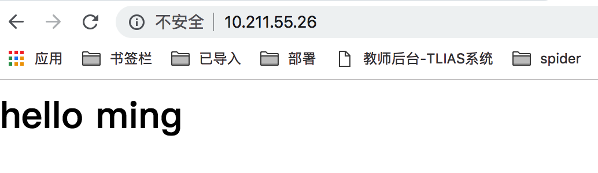
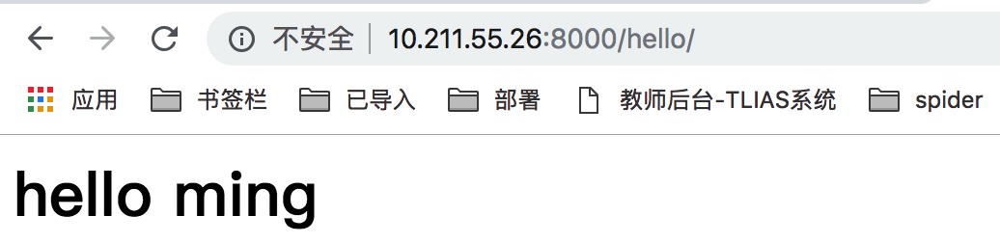

反向代理
代理是什么？
简单来说，我找一个中间人，代替我去做一件事情，只要他给我结果就可以。
代理一般分为两种：正向代理、反向代理

区别：
- 从用途上来讲：
- 正向代理-为局域网客户端向外访问Internet服务。可以使用缓冲特性减少网络使用率。
- 反向代理-为局域网服务器向外提供Internet服务。可以使用负载平衡提高客户访问量。还可以基于高级URL策略和管理技术对服务进行高质量管控。
- 从安全性来讲：
- 正向代理-必须采取安全措施确保内网客户端通过它访问外部网站。隐藏客户端的身份
- 反向代理-对外提供服务是透明的，客户端并不知道自己访问的是一个代理。隐藏服务端的身份
nginx 代理模块
官方资料：http://www.nginx.cn/doc/standard/httpproxy.html
官方的代理属性很多，我们主要介绍proxy_pass和proxy_set_header属性
官方代码示例
location / {
proxy_pass http://localhost:8000; # 设定请求跳转后的地址，可以使用hostname或IP:Port形式
proxy_set_header X-Real-IP $remote_addr; # 后端请求携带原始请求的真实IP地址
}
proxy_pass关键点：
proxy_pass后面的路径最后的“ / ”作用很重要
示例代码：
location /html/ {
proxy_pass http://proxy.com;
proxy_pass http://proxy.com/;
}
假设我们访问的url是 http://domain.com/html/test.js ，如何理解上述两种proxy_pass的区别呢？
对于第一个来说 proxy.com后面没有"/"，表示"/html/" 请求(包括自己)后续的路径及其参数等关键字都由http://a.com/ 来处理，代理后的样式如下：
对于第二个来所 proxy.com后面有"/"，表示"/html/" 请求后续的路径及其参数等关键字都由http://a.com/ 来处理，代理后的样式如下：
nginx代理实践
代理的配置文件
# vim /etc/nginx/conf.d/proxy.conf
server {
listen 10.211.55.26:80;
server_name www.ming.com;
location / {
proxy_pass http://10.211.55.26:9999/hello/;
}
}
后端服务配置文件
# vim /etc/nginx/conf.d/hello.conf
server {
listen 10.211.55.26:8000;
location /hello/ {
alias /var/www/html/hello/;
try_files $uri $uri/ =404;
}
}
准备后端服务文件
mkdir -p /var/www/html/hello/
echo '<h1>proxy_backend</h1>' > /var/www/html/hello/index.html
检查nginx配置后重载服务
nginx -t
systemctl reload nginx
netstat -tnulp | grep nginx
效果展示：

